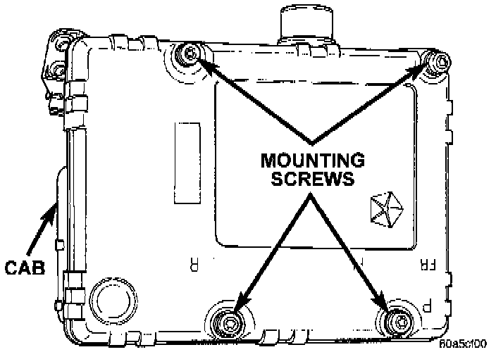

Disassembly and Assembly
DISASSEMBLY1. Remove pump motor connector from the Controller Antilock Brake (CAB).
CAB Mounting Screws:

2. Remove CAB mounting screws from the Hydraulic Control Unit (HCU).
3. Remove CAB from the HCU.
ASSEMBLY
1. Install the CAB onto the HCU.
2. Install the CAB mounting screws and tighten to 1.8 Nm (16 inch lbs.).
3. Install pump motor connector to the CAB.